Indian Ocean skipjack model : data fits
This section displays fits to the data generated from the run task (i.e. ./ioskj.exe run) which uses the reference parameter values defined in parameters/input folder. Since those values are user inputs the following may not reflect best parameter estimates. In the following plots the lines indicate values expected from the model while the points represent the observed data.
source('../../common.R',local=T)
load(c(
'm_pl_cpue','w_ps_cpue','size_freqs','z_ests'
),from='../../data/output')
1 Maldive pole and line (M-PL) CPUE
m_pl_cpue = subset(m_pl_cpue,data_year>2000) print(ggplot(m_pl_cpue,aes(x=data_year+quarter/4)) + geom_line(aes(y=value),alpha=0.7) + geom_point(aes(y=location,colour=factor(quarter),shape=factor(quarter)),size=3) + geom_hline(y=0,alpha=0) + scale_shape_manual(values=1:4) + labs(x='Year',y='Maldive pole and line CPUE index',colour='Quarter',shape='Quarter'))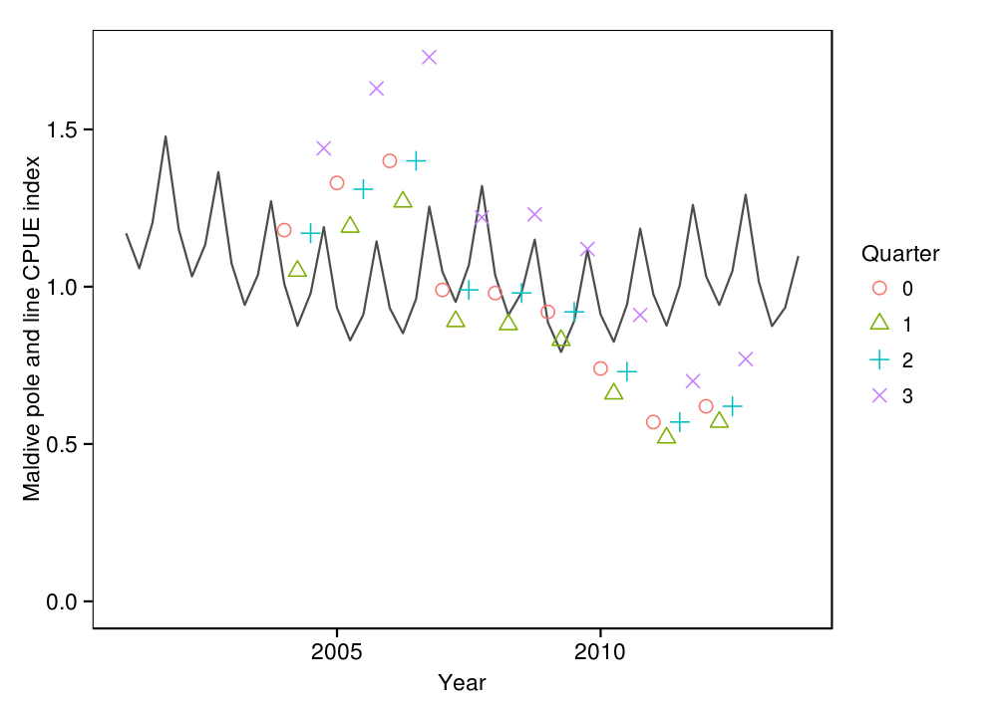
2 Western purse seine (W-PS) CPUE
print(ggplot(w_ps_cpue,aes(x=data_year)) + geom_line(aes(y=value),alpha=0.7) + geom_point(aes(y=location),shape=1,size=3) + geom_hline(y=0,alpha=0) + labs(x='Year',y='West purse siene CPUE index'))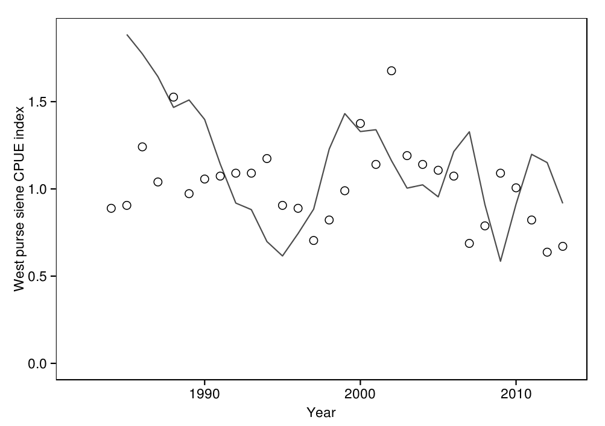
3 Western purse seine (W-PS) tagging Z estimates
z_ests = subset(z_ests,is.finite(value)) print(ggplot(z_ests,aes(x=data_year+quarter/4)) + geom_line(aes(y=value),alpha=0.7) + geom_point(aes(y=mean,colour=factor(quarter)),shape=1,size=3) + geom_errorbar(aes(ymin=mean-sd,ymax=mean+sd,colour=factor(quarter)),width=0) + geom_hline(y=0,alpha=0) + facet_grid(z_size~.) + labs(x='Year',y='Instantaneous rate of total mortality (Z)',colour='Quarter'))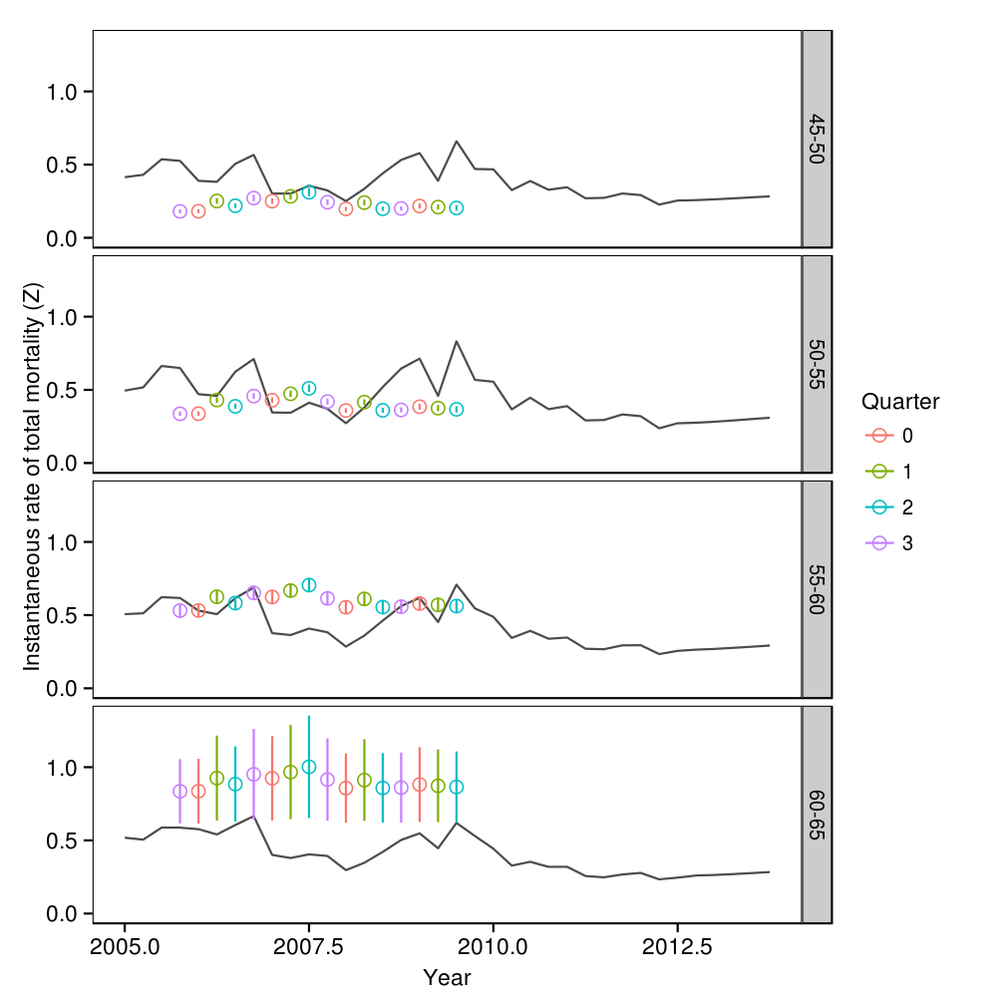
4 Size frequencies
4.1 Mean length by region, method, year and quarter
size_freqs_summ = ddply(size_freqs,.(region,method,data_year,quarter),summarise,
observed=sum(length*proportion,na.rm=T),
uncertainty=mean(sd,na.rm=T),
expected=sum(length*value,na.rm=T)
)
size_freqs_summ = within(size_freqs_summ,{
observed[observed==0] = NA
})
print(ggplot(size_freqs_summ,aes(x=data_year+quarter/4,colour=factor(quarter))) +
geom_line(aes(y=expected),alpha=0.7) +
geom_point(aes(y=observed,size=log(uncertainty)),shape=1,size=2) +
facet_grid(method~region) +
labs(x='Year',y='Mean length (cm)',colour='Quarter'))
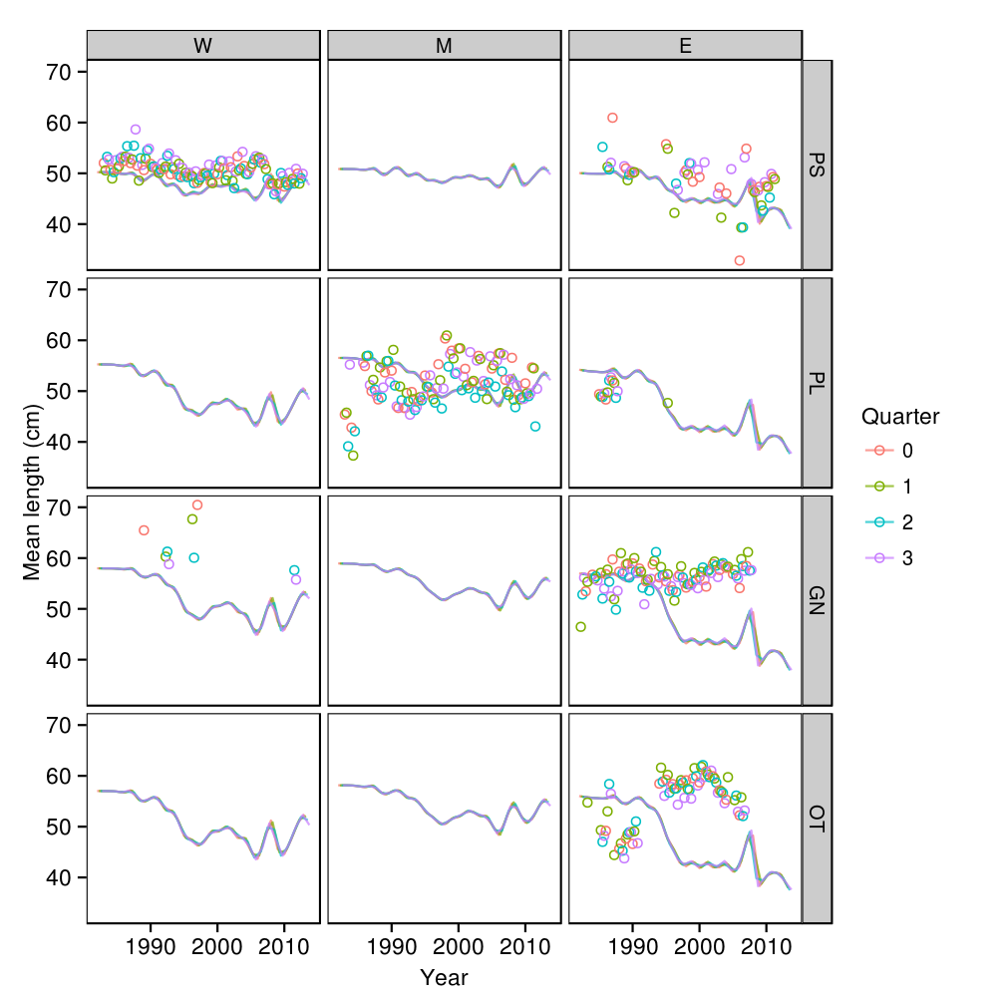
4.2 By region, method & quarter (aggregated over years)
size_freqs_over_years = ddply(size_freqs,.(region,method,quarter,length),summarise, observed=mean(proportion,na.rm=T), expected=mean(value,na.rm=T) ) print(ggplot(size_freqs_over_years,aes(x=length,colour=factor(quarter))) + geom_vline(x=seq(0,80,20),linetype=3,colour='grey') + geom_line(aes(y=expected),alpha=0.7) + geom_point(aes(y=observed),shape=1,size=2) + geom_hline(y=0,alpha=0) + facet_grid(method~region) + labs(x='Length (cm)',y='Proportion',colour='Quarter'))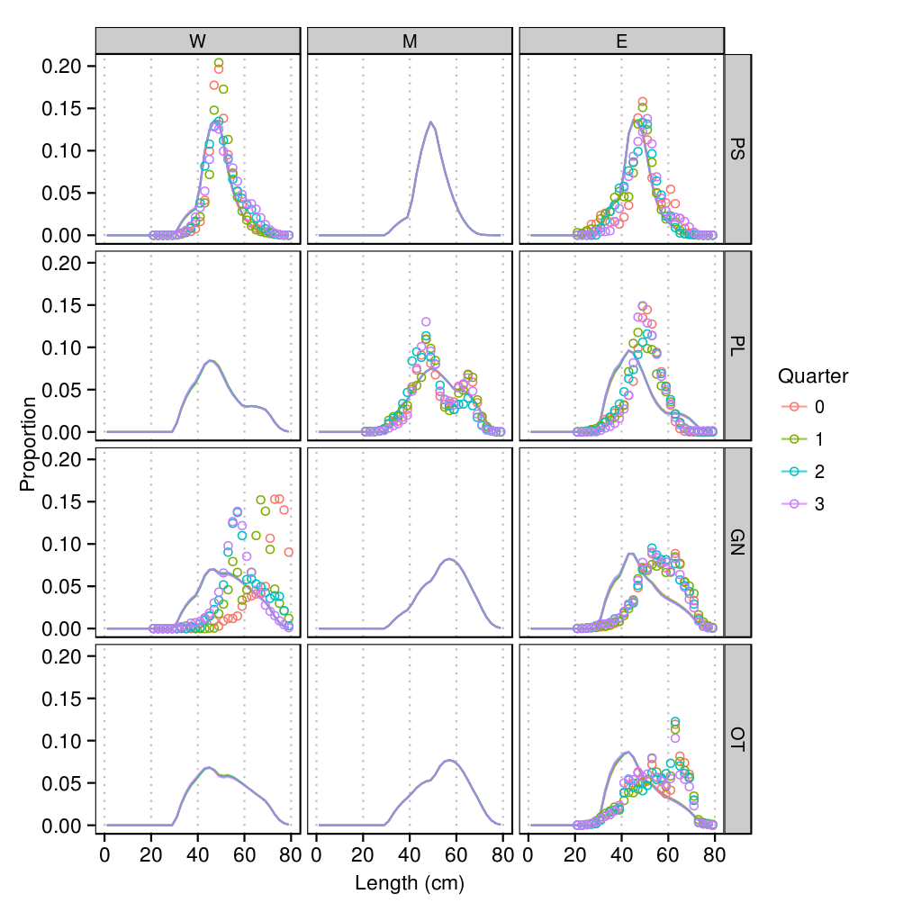
4.3 By year for a particular region & method (aggregated over quarters)
size_freqs_by_year = ddply(size_freqs,.(region,method,data_year,length),summarise,
observed=mean(proportion,na.rm=T),
expected=mean(value,na.rm=T)
)
size_freqs_by_year_sub <- function(region_,method_){
print(ggplot(subset(size_freqs_by_year,region==region_&method==method_),aes(x=length)) +
geom_point(aes(y=observed),shape=16,size=2,colour='grey') +
geom_line(aes(y=expected),alpha=0.7) +
geom_hline(y=0,alpha=0) +
facet_wrap(~data_year) +
labs(x='Length (cm)',y='Proportion'))
}
items <- list(
list(region='W',method='PS',desc='purse seine (PS) in the western region (W)'),
list(region='W',method='GN',desc='gillnet (GN) in the western region (W)'),
list(region='M',method='PL',desc='pole and line (PL) in the Maldive region (M)'),
list(region='E',method='OT',desc='other methods (OT) in the eastern region (E)')
)
size_freqs_by_year_sub(item$region,item$method)
size_freqs_by_year_sub(item$region,item$method)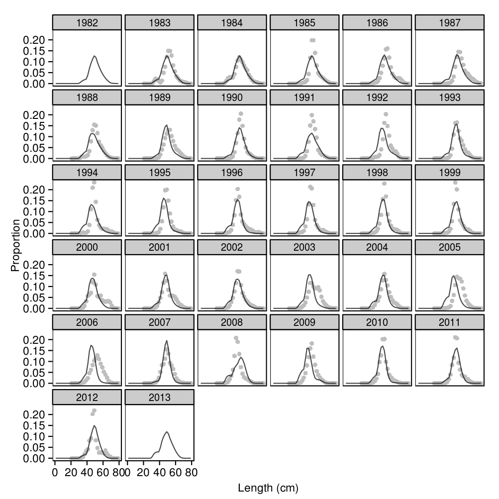
size_freqs_by_year_sub(item$region,item$method)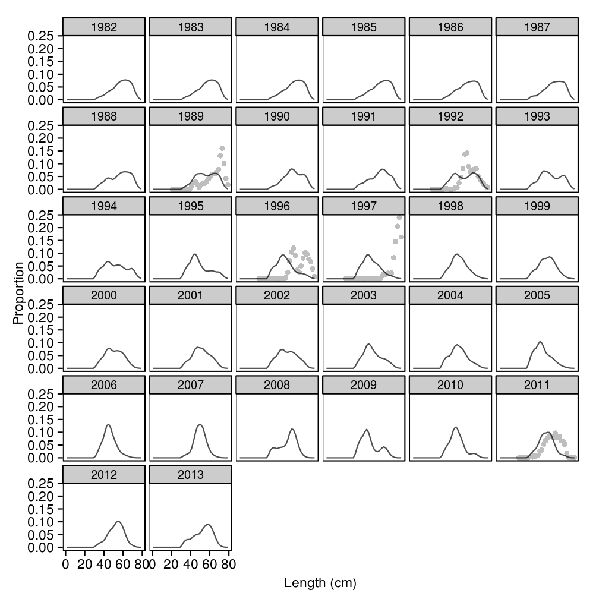
size_freqs_by_year_sub(item$region,item$method)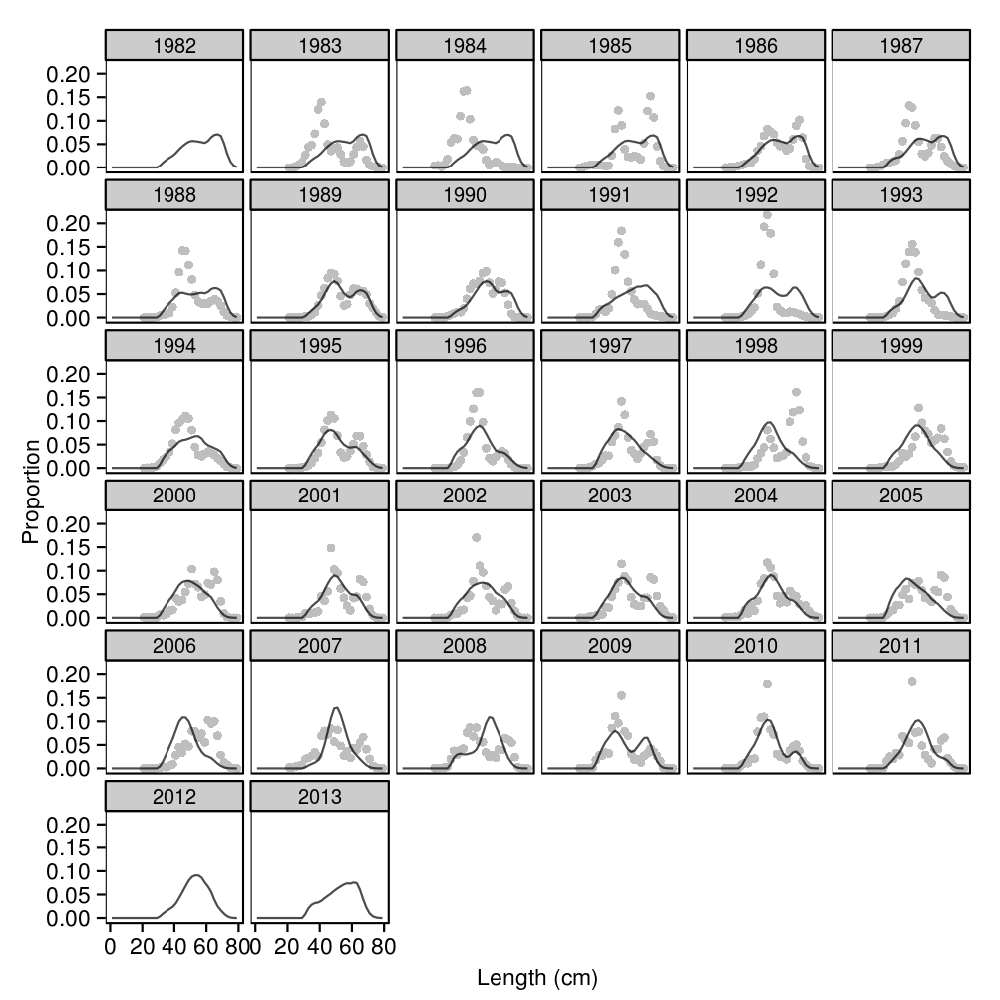
size_freqs_by_year_sub(item$region,item$method)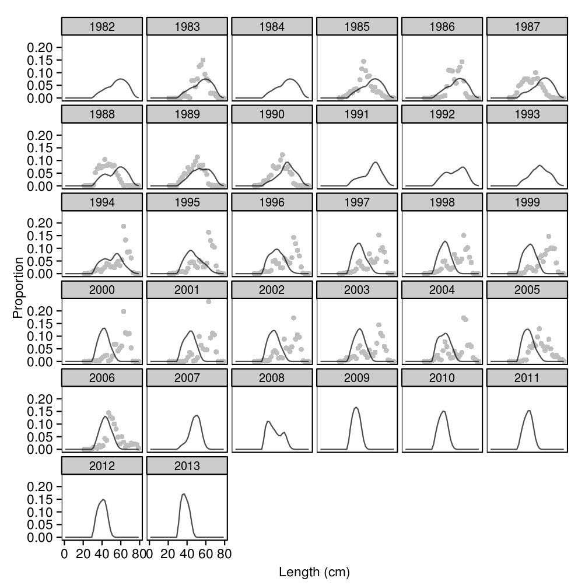
4.4 By year and quarter for a particular region & method (unaggregated)
size_freqs_sub <- function(region_,method_){
print(ggplot(subset(size_freqs,region==region_&method==method_),aes(x=length)) +
geom_point(aes(y=proportion),shape=16,size=2,colour='grey') +
geom_line(aes(y=value),alpha=0.7) +
geom_hline(y=0,alpha=0) +
facet_grid(data_year~quarter) +
labs(y="Proportion",x="Length (cm)"))
}
items <- list(
list(region='W',method='PS',desc='purse seine (PS) in the western region (W)'),
list(region='W',method='GN',desc='gillnet (GN) in the western region (W)'),
list(region='M',method='PL',desc='pole and line (PL) in the Maldive region (M)'),
list(region='E',method='OT',desc='other methods (OT) in the eastern region (E)')
)
size_freqs_sub(item$region,item$method)
size_freqs_sub(item$region,item$method)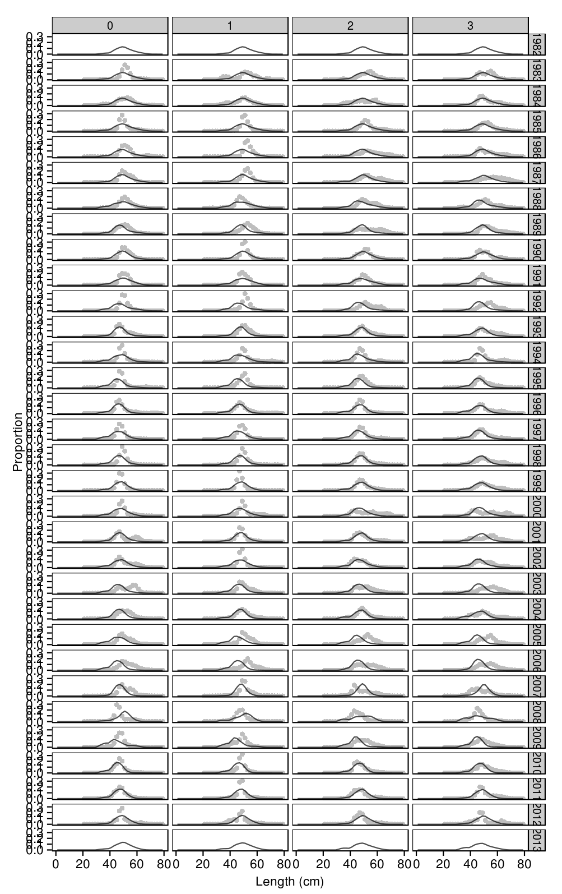
size_freqs_sub(item$region,item$method)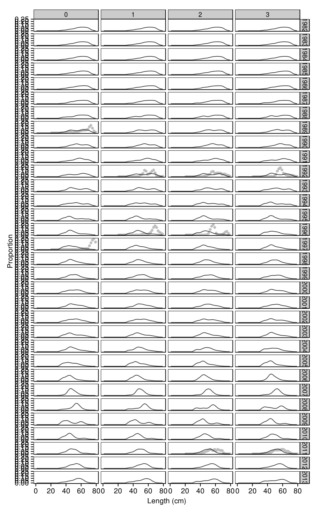
size_freqs_sub(item$region,item$method)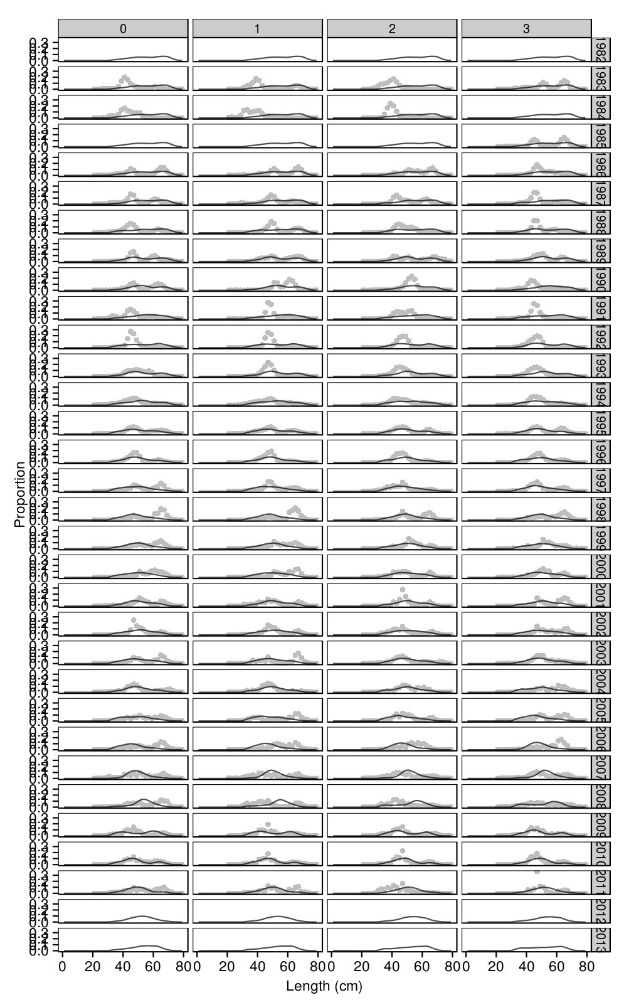
size_freqs_sub(item$region,item$method)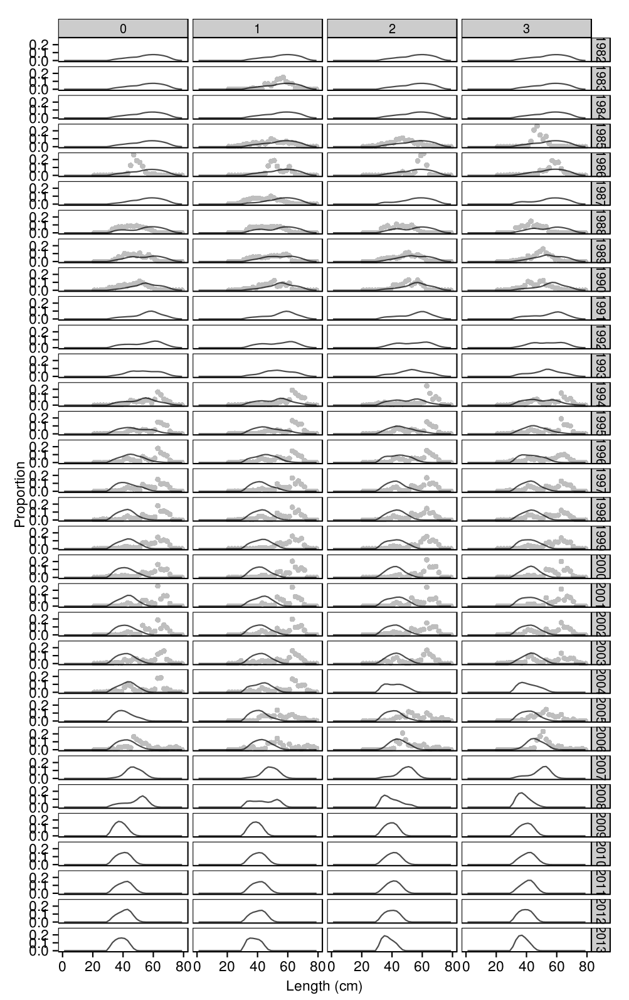